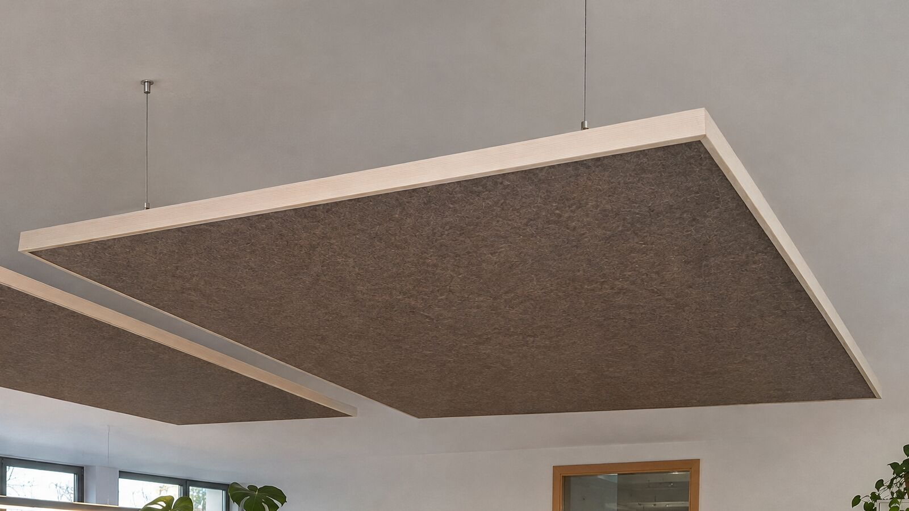
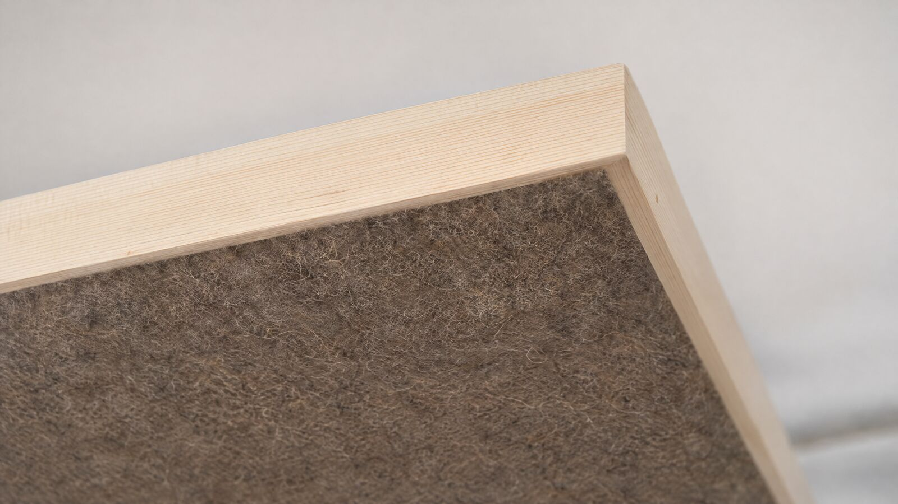
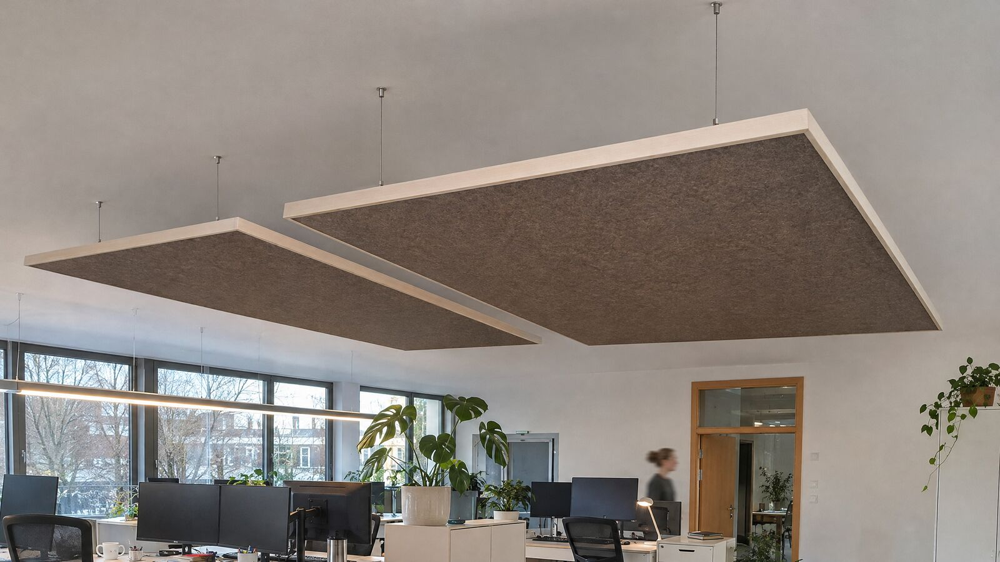

Produkte / Natur Deckensegel
Deckensegel aus Schafwolle
Natur Deckensegel
Ein Deckensegel aus Schafwolle im Holzrahmen. Es hängt frei im Raum und dämpft den Nachhall dort, wo er stört. Erhältlich als Light oder als Resistant mit erhöhtem Brandschutz.

Bis Klasse A
Light: αw 0,95 bei 200 mm Abhängetiefe. Resistant mit guter Tiefenabsorption.
Komfort-Abhängung
Werkzeuglos höhenverstellbar mit Deckenbaldachin und Stahlseil.
Rahmen aus Fichte
Einheimisches Massivholz, naturbelassen und ohne Lackierung.
Standard und Sonder
Standardformate bis 2408 × 1208 mm, Sonderformate auf Anfrage.

Im Detail
Wolle im Rahmen
Der Absorber besteht aus 9 mm Silentum® Schafwollfilz, der auf die Trägerplatte kaschiert ist. Ein Rahmen aus Fichte fasst ihn ein. Aus der Nähe sieht man die Struktur der Wolle, aus der Entfernung eine ruhige, warme Fläche.
- Rahmen aus naturbelassener Fichte, 36 mm stark, Falz zur Sichtseite 14 mm
- Wolle in den Naturfarben Stone, Creme, Wood und Origin
- Rückseitige Massivholzleisten nehmen die Abhängung auf
Aufbau
Zwei Varianten, gleiche Oberfläche
Silentum® Schafwollfilz, 9 mm
Sichtfläche und eigentlicher Absorber. Filtert Schadstoffe aus der Raumluft, schmutzabweisend und mottensicher.
Trägerplatte
Light: FSC-zertifizierte Wellkartonplatte, besonders leicht und nachhaltig. Resistant: Gipskartonplatte für erhöhten Brandschutz.
Rahmen aus Fichte
Einheimische Fichte, naturbelassen. Bei Holz übliche natürliche Nachfärbung durch Lichteinfall.
| Light | Resistant | |
|---|---|---|
| Absorber | 9 mm Silentum® Schafwollfilz auf Wellkartonplatte | 9 mm Silentum® Schafwollfilz auf Gipskartonplatte |
| Schallabsorption | Klasse A, αw 0,95 bei 200 mm Abhängetiefe Klasse C, αw 0,75 bei 90 mm | Klasse C, αw 0,7 bei 200 mm (Tiefenabsorber) Klasse D, αw 0,6 bei 90 mm |
| Rahmen | Fichte, naturbelassen, Stärke 36 mm, Falz Sichtseite 14 mm | |
| Standardformate | 2408 × 1208 × 36 mm 1208 × 1208 × 36 mm | 1988 × 1208 × 36 mm |
| Gewicht | 3,9 kg/m² inkl. Abhängekonstruktion | 9,8 kg/m² inkl. Abhängekonstruktion |
| Brandklasse | Wellkarton Klasse E, Schafwolle C-s2-d0 | Gipskarton Klasse A2, Schafwolle C-s2-d0 |
| CO₂-Emissionen | GWP total ca. −0,31 kg CO₂e/m² | GWP total ca. −0,43 kg CO₂e/m² |
| Abhängung | Werkzeuglos höhenverstellbare Komfortabhängung mit Deckenbaldachin, Stahlseil 1 mm und Abhängeelement auf rückseitigen Massivholzleisten, stufenlos. Direktabhängung optional. | |
| Leuchten | – | LED-Einbauleuchten möglich: 3000 K oder 4000 K, Ø 170 mm (430 lm) oder Ø 225 mm (1530 lm), Effizienzklasse A++, Ra > 80, IP 20 |
| Naturfarben | Stone, Creme, Wood, Origin. Sonderfarben auf Anfrage. | |
Schallabsorptionsgrad αs je Frequenz
Bezogen auf die einseitige Absorberfläche, Werte aus dem Prospekt F2026. Angaben zu Brandklasse und Schallabsorption gelten laut Bedingungen und Aufbau im jeweiligen Prüfzeugnis.
Formate
Standardformate, maßstäblich
Sonderformate fertigen wir passend zu Ihrer Raumgeometrie.
Anwendungen
Wo Deckensegel passen
Büros, Foyers, Besprechungs- und Veranstaltungsräume, Musikräume, Schulen, Wohnräume, Hotelzimmer, Shopping Center und Gastronomie. Auch zur Nachrüstung in eingerichteten Räumen.


Häufige Fragen
Gut zu wissen
Light oder Resistant: Welche Variante passt?
Light ist besonders nachhaltig und leicht und erreicht bis zu Schallabsorberklasse A. Es hat keine Brandschutz-Klassifikation. Resistant ist etwas schwerer, hat eine nicht brennbare Gipskartonplatte und eignet sich bei erhöhten Brandschutzanforderungen.
Wie viele Segel brauche ich für meinen Raum?
Das hängt von Raumvolumen, Nutzung und Abhängehöhe ab. Mit dem Raumakustik-Rechner sehen Sie eine erste Näherung. Für eine verbindliche Planung bietet ZIEGLER SCHALLSCHUTZ eine Akustikplanung an.
Wie hoch werden die Segel abgehängt?
Die Werte im Prospekt gelten für 90 mm und 200 mm Abhängetiefe. Je größer der Abstand zur Decke, desto besser wirkt das Segel bei tiefen Frequenzen. Die Komfortabhängung ist stufenlos höhenverstellbar.
Kann ich Leuchten integrieren?
Bei der Variante Resistant sind runde LED-Einbauleuchten in warmweiß (3000 K) oder neutralweiß (4000 K) erhältlich.
Wo wird das Segel hergestellt?
In Oberndorf bei Salzburg, mit Rohmaterial aus Deutschland und Österreich. Die PV-Anlage am Standort deckt im Jahresdurchschnitt mehr als den Strombedarf der Produktion.
Beratung
Wir planen Ihren Raum
Schicken Sie uns einen Grundriss oder ein Foto. Sie bekommen einen Vorschlag mit Anzahl, Format und Position der Segel.
Beratung anfragen